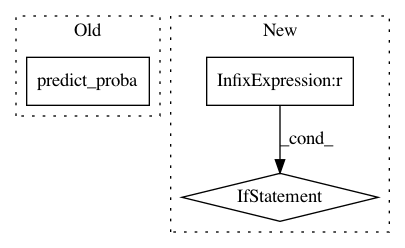

f0f4ba31aaec58f607df632cfbec5fd39802958f,mlxtend/evaluate/learning_curves.py,,plot_learning_curves,#,9
Before Change
for r in rng:
model = clf.fit(X_train.ix[:, 0:r], y_train)
if predict_proba == True:
y_train_predict = clf.predict_proba(X_train.ix[:, 0:r])
y_test_predict = clf.predict_proba(X_test.ix[:, 0:r])
else:
y_train_predict = clf.predict(X_train.ix[:, 0:r])
y_test_predict = clf.predict(X_test.ix[:, 0:r])
After Change
(training_error, test_error): tuple of lists
if scoring != "misclassification error":
from sklearn import metrics
scoring_func = {
"accuracy": metrics.accuracy_score,
"average_precision": metrics.average_precision_score,
"f1": metrics.f1_score,
"f1_micro": metrics.f1_score,
"f1_macro": metrics.f1_score,
"f1_weighted": metrics.f1_score,
"f1_samples": metrics.f1_score,
"log_loss": metrics.log_loss,
"precision": metrics.precision_score,
"recall": metrics.recall_score,
"roc_auc": metrics.roc_auc_score,
"adjusted_rand_score": metrics.adjusted_rand_score,
"mean_absolute_error": metrics.mean_absolute_error,
"mean_squared_error": metrics.mean_squared_error,
"median_absolute_error": metrics.median_absolute_error,
"r2": metrics.r2_score}
if not scoring in scoring_func.keys():
raise ArgumentError("scoring must be in", scoring_func.keys())
else:
def misclf_err(y_predict, y):
return (y_predict != y).sum() / len(y)
scoring_func = {
"misclassification error": misclf_err}
training_errors = []
test_errors = []
if kind not in ("training_size", "n_features"):
In pattern: SUPERPATTERN
Frequency: 3
Non-data size: 3
Instances
Project Name: rasbt/mlxtend
Commit Name: f0f4ba31aaec58f607df632cfbec5fd39802958f
Time: 2015-04-09
Author: se.raschka@me.com
File Name: mlxtend/evaluate/learning_curves.py
Class Name:
Method Name: plot_learning_curves
Project Name: pliablepixels/zmeventnotification
Commit Name: 1e619d91956c813d2328a5460da0a273fe135905
Time: 2019-11-15
Author: pliablepixels@gmail.com
File Name: hook/zmes_hook_helpers/face.py
Class Name: Face
Method Name: detect
Project Name: albahnsen/CostSensitiveClassification
Commit Name: 7dac796eaba69e634ba9deb920284dad9f51aeff
Time: 2014-08-09
Author: al.bahnsen@gmail.com
File Name: costcla/models/bagging.py
Class Name: BaggingClassifier
Method Name: predict